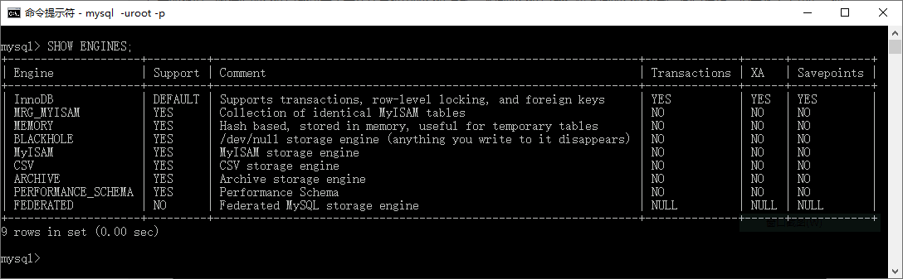

首页 > MySQL教程 > MySQL数据类型和存储引擎
MySQL存储引擎有哪些？
数据库存储引擎是数据库底层软件组件，数据库管理系统使用数据引擎进行创建、查询、更新和删除数据操作。简而言之，存储引擎就是指表的类型。数据库的存储引擎决定了表在计算机中的存储方式。不同的存储引擎提供不同的存储机制、索引技巧、锁定水平等功能，使用不同的存储引擎还可以获得特定的功能。
现在许多数据库管理系统都支持多种不同的存储引擎。MySQL 的核心就是存储引擎。
MySQL 提供了多个不同的存储引擎，包括处理事务安全表的引擎和处理非事务安全表的引擎。在 MySQL 中，不需要在整个服务器中使用同一种存储引擎，针对具体的要求，可以对每一个表使用不同的存储引擎。
MySQL 5.7 支持的存储引擎有 InnoDB、MyISAM、Memory、Merge、Archive、CSV、BLACKHOLE 等。可以使用
Support 列的值表示某种引擎是否能使用，
下面简要描写几种存储引擎，后面会对其中的几种（主要是 InnoDB 和 MyISAM ）进行详细讲解。像 NDB 这样的需要更多扩展性的讨论，这超出了本教程的介绍范畴，所以在教程后面对它们不会介绍太多。
有几种存储引擎的名字还有同义词，例如，MRG_MyISAM 和 NDBCLUSTER 分别是 MERGE 和 NDB 的同义词。存储引擎 MEMORY 和 InnoDB 在早期分别称为 HEAP 和 Innobase。虽然后面两个名字仍能被识别，但是已经被废弃了。
现在许多数据库管理系统都支持多种不同的存储引擎。MySQL 的核心就是存储引擎。
MySQL 提供了多个不同的存储引擎，包括处理事务安全表的引擎和处理非事务安全表的引擎。在 MySQL 中，不需要在整个服务器中使用同一种存储引擎，针对具体的要求，可以对每一个表使用不同的存储引擎。
MySQL 5.7 支持的存储引擎有 InnoDB、MyISAM、Memory、Merge、Archive、CSV、BLACKHOLE 等。可以使用
SHOW ENGINES;语句查看系统所支持的引擎类型，结果如图所示。

Support 列的值表示某种引擎是否能使用，
YES表示可以使用，NO表示不能使用，DEFAULT表示该引擎为当前默认的存储引擎。下面简要描写几种存储引擎，后面会对其中的几种（主要是 InnoDB 和 MyISAM ）进行详细讲解。像 NDB 这样的需要更多扩展性的讨论，这超出了本教程的介绍范畴，所以在教程后面对它们不会介绍太多。
| 存储引擎 | 描述 |
|---|---|
| ARCHIVE | 用于数据存档的引擎，数据被插入后就不能在修改了，且不支持索引。 |
| CSV | 在存储数据时，会以逗号作为数据项之间的分隔符。 |
| BLACKHOLE | 会丢弃写操作，该操作会返回空内容。 |
| FEDERATED | 将数据存储在远程数据库中，用来访问远程表的存储引擎。 |
| InnoDB | 具备外键支持功能的事务处理引擎 |
| MEMORY | 置于内存的表 |
| MERGE | 用来管理由多个 MyISAM 表构成的表集合 |
| MyISAM | 主要的非事务处理存储引擎 |
| NDB | MySQL 集群专用存储引擎 |
有几种存储引擎的名字还有同义词，例如，MRG_MyISAM 和 NDBCLUSTER 分别是 MERGE 和 NDB 的同义词。存储引擎 MEMORY 和 InnoDB 在早期分别称为 HEAP 和 Innobase。虽然后面两个名字仍能被识别，但是已经被废弃了。
关注公众号「站长严长生」，在手机上阅读所有教程，随时随地都能学习。内含一款搜索神器，免费下载全网书籍和视频。

微信扫码关注公众号